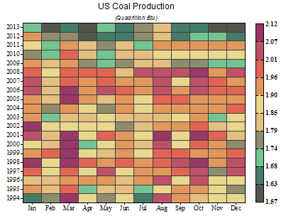

FAQ-187 Wie erstelle ich eine Heatmap?
create-heat-map
Letztes Update: 04.01.2023
Origin unterstützt das Zeichnen von XY-Daten, XYZ-Daten oder Matrixdaten als Heatmap und 4 Standarddiagrammvorlagen für Heatmaps. Heatmaps, Heatmaps mit Beschriftungen, Heatmaps aufteilen sind über das Menü Zeichnen: Kontur und Gestapelte 3D-Heatmaps über das Menü Zeichnen: 3D verfügbar.
Es gibt auch zusätzliche Heatmap-Vorlagen wie Dreiecks-Heatmap und Heatmap mit signifikanter Markierung online zum Download über Hilfsmittel: Vorlagencenter ...
Beim Zeichnen von XY-Spalten oder XYZ-Spalten wird eine 2D-Einteilung für die XY-Daten durchgeführt, um die Statistikwerte zu berechnen, wie z. B. Anzahlen, Mittelwert, Maximum etc. in jeder Einteilung, um ein Arbeitsblatt für die Heatmap zu erstellen. Die Heatmap wird basierend auf dem neuen Blatt Heatmap erstellt.
- 
Beschriftungen von Hilfsstrichen an Achsen benutzerdefiniert anpassen
- Wenn die Hilfsstrichsbeschriftungen zu dicht sind, wenn es z. B. zu viele Einteilungen gibt, klicken Sie doppelt auf die Achse und gehen Sie zur Registerkarte Skalierung.
- Setzen Sie den Typ der großen Hilfsstriche auf Nach Inkrement oder Nach Anzahlen und legen Sie den Inkrementwert oder die Menge der Anzahlen fest.
Beschriftungen zur Heatmap hinzufügen
- Klicken Sie auf die Heatmap und verwenden Sie die Schaltfläche der Minisymbolleiste, um die Beschriftung auf der Heatmap auszuschalten.
- Öffnen Sie den Dialog Details Zeichnung. Gehen Sie zur Registerkarte Beschriftungen, um festzulegen, was als Beschriftung angezeigt werden soll.

Karten im Hintergrund hinzufügen Wenn XY Längen- und Breitengrad ist, gibt es mehrere Möglichkeiten, eine Karte zum Hintergrund hinzuzufügen.
- Wählen Sie im Menü Einfügen, um zu sehen, ob einige Standardkarten verfügbar sind, z. B. (Karte der kontinentalen USA oder Weltkarte etc.
- Verwenden Sie Origins App Map Online, um eine Karte als Hintergrund einzufügen.
- Verwenden Sie Origins App Google Map Import, um eine Google-Karte als Hintergrund einzufügen.
- Verwenden Sie den Shapefile-Konnektor, um Shapefile zu importieren und Shapefile als Hintergrund zu zeichnen.
- Um das Diagramm isometrisch zu machen, drücken Sie die Alt-Taste und klicken Sie in das Diagramm und dann auf die Schaltfläche der Minisymbolleiste Isometrisch.

Lücke zwischen Zellen der Heatmap einfügen
- Klicken Sie auf die Heatmap und schalten Sie die Lücke zwischen Heatmaps ein und passen Sie die Dicke an.
- Öffnen Sie den Dialog Details Zeichnung. Gehen Sie zur Registerkarte Anzeige, um die Lücke in X- und Y-Richtung anzupassen.
- Beim Zeichnen über Zeichnen: Kontur: Heatmap aufteilen werden Lücken automatisch horizontal eingefügt.
Weitere Ressourcen:
Stichwörter:Heatmap, Kontur, virtuelle Matrix, Heatmap aufteilen